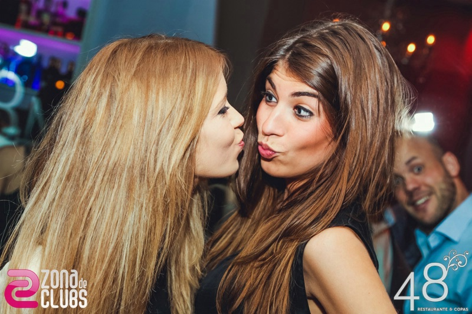

<!--
  #IMPLEMENTATION-DETAIL:
  this view is our top one and uses ion-side-menus component.
  In case of views where we want to hide the menu, we'll hide the
  navigation bar provided here.
  #TIP: enable-menu-with-back-views="true" is set to true to show the menu opening control in all views by default.
-->
<ion-side-menus enable-menu-with-back-views="true">

    <ion-side-menu-content>
        <ion-nav-bar class="bar-calm" align-title="center">
            <!-- #TIP: <ion-nav-back-button> is commented out in this example,
              uncomment if you need a back button in some views.
            -->
            
            <ion-nav-back-button class="button-clear" ng-click="goBack()">
                <i class="icon ion-arrow-left-c"></i> Back
            </ion-nav-back-button>
            
            <ion-nav-buttons side="right">
                <button class="white-color button button-icon button-clear ion-headphone" menu-toggle="right"></button>
            </ion-nav-buttons>
        </ion-nav-bar>

        <ion-nav-view name="menuContent" class="slide-left-right"></ion-nav-view>

    </ion-side-menu-content>
    <ion-side-menu side="right">
        <!--
          #IMPLEMENTATION-DETAIL:
          we are using our custom bar classes here
          see scss/themed.scss for implementation.
        -->
        <ion-header-bar class="bar-calm">
            <h3>Places</h3>
        </ion-header-bar>

        <ion-content>
            <div class="list">

                <div class="item item-divider">
                    Shiraz
                </div>

                <a class="item item-avatar" href="#">
                    
                    <h2>Venkman</h2>
                    <p>Back off, man. I'm a scientist.</p>
                </a>
                <a class="item item-avatar" href="#">
                    
                    <h2>Venkman</h2>
                    <p>Back off, man. I'm a scientist.</p>
                </a>

                <div class="item item-divider">
                    Esfehan
                </div>
                <a class="item item-avatar" href="#">
                    
                    <h2>Venkman</h2>
                    <p>Back off, man. I'm a scientist.</p>
                </a>

            </div>
        </ion-content>

        <!--
          #IMPLEMENTATION-DETAIL:
          we choose to put a "logout" button in the footer of side menu.
          the "logout" method in contained in "AppCtrl" controller (see controllers.js)
        -->
        <ion-footer-bar class="bar-calm">
            <div style="margin-left: auto;margin-right:auto;">
                <h5>Made with <i class="icon ion-ios-heart assertive"></i> on planet earth</h5>
            </div>
        </ion-footer-bar>

    </ion-side-menu>
</ion-side-menus>